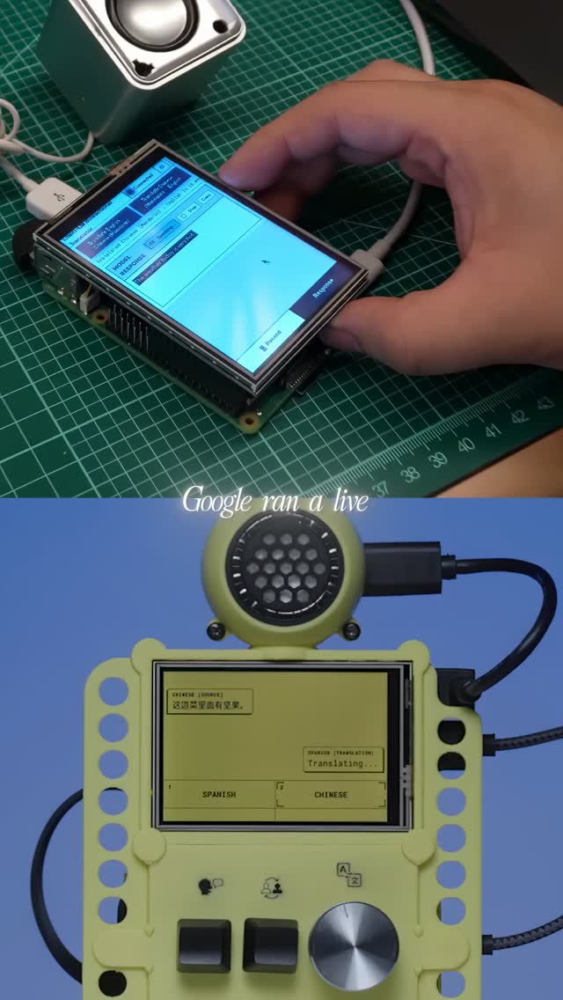
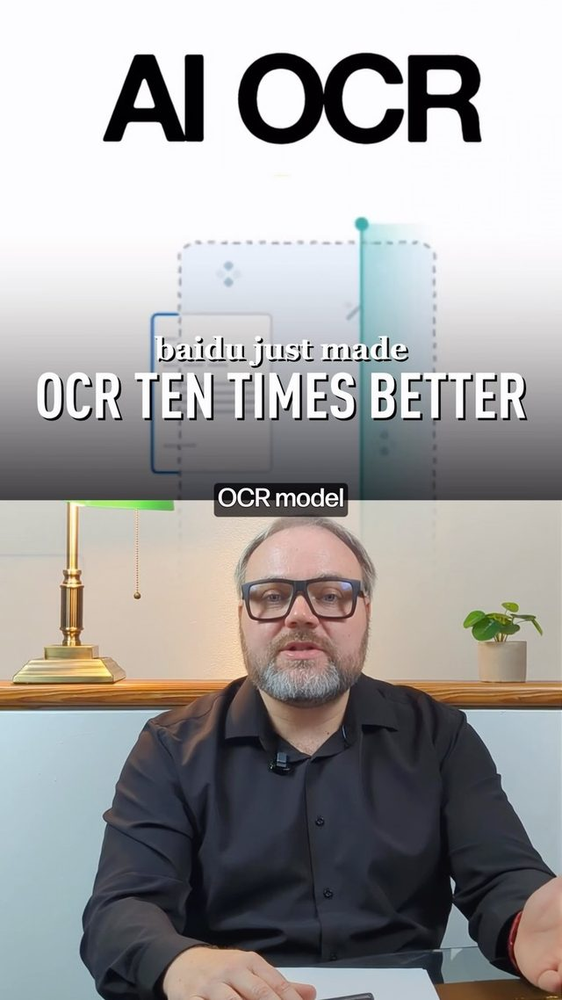
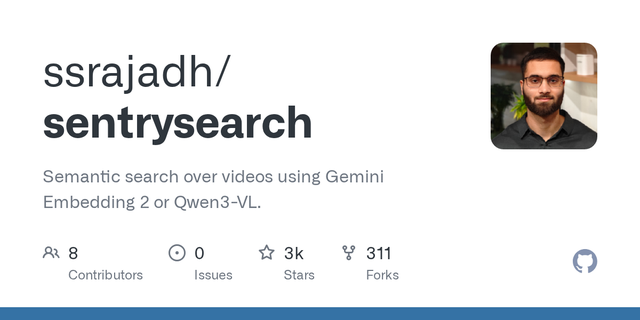
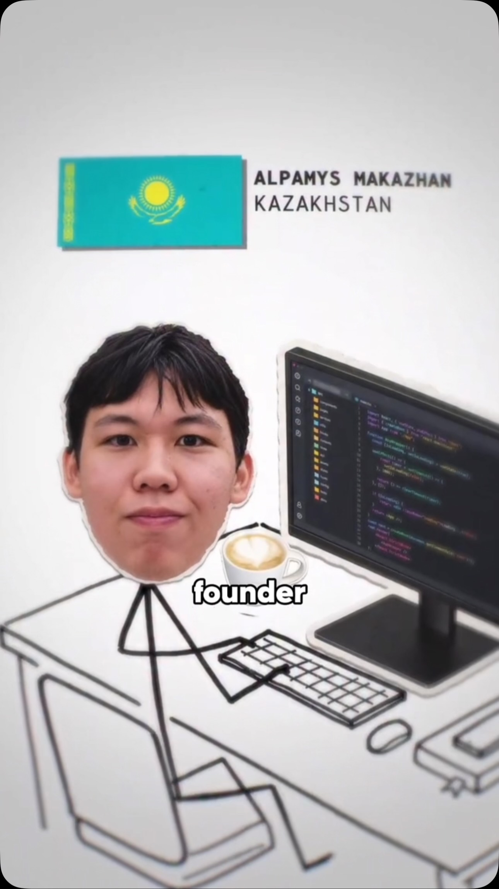
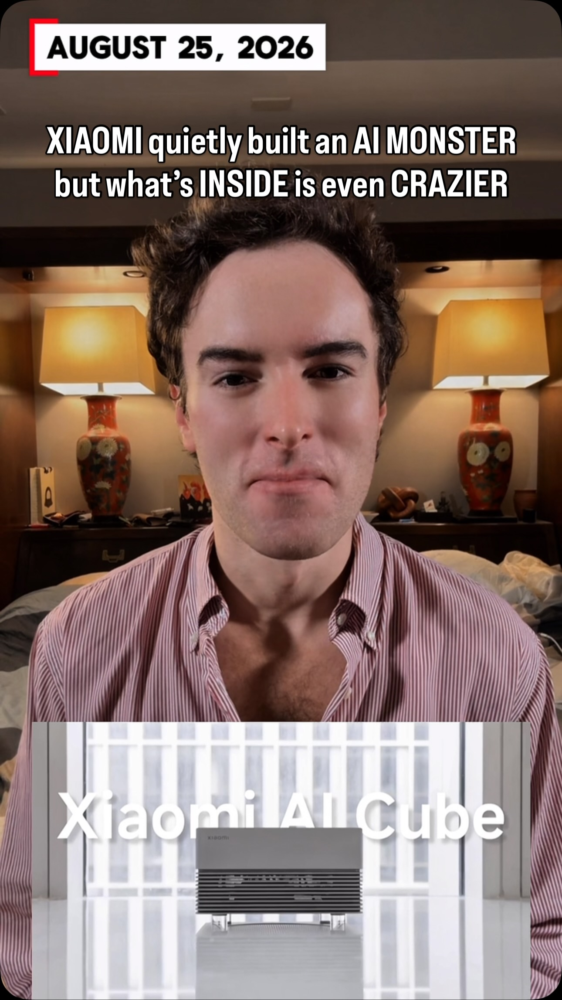
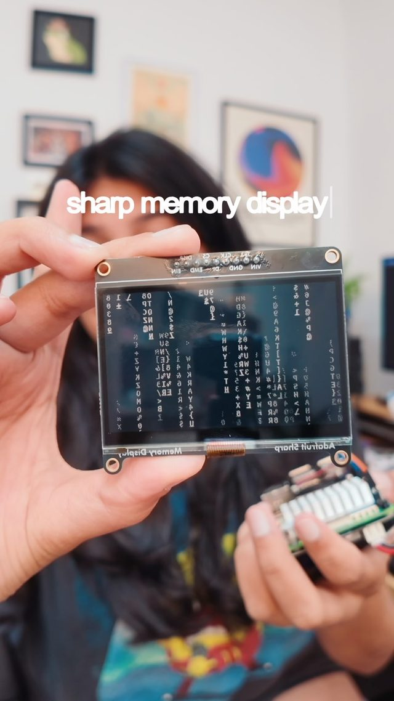
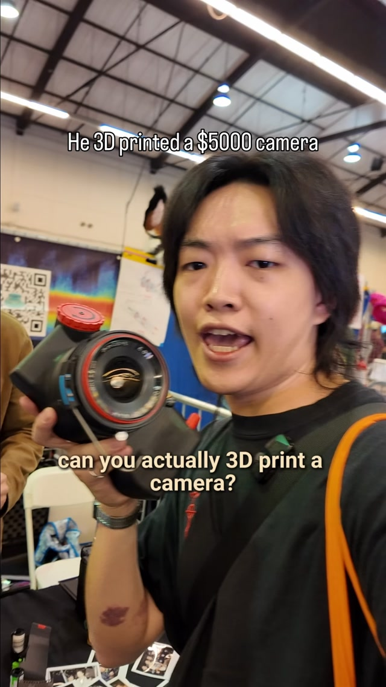

emergent_capability
Offline AI Appliances — one job, one box, no cloud
Gemma Translator puts speech recognition, translation and TTS on a Raspberry Pi 5, and it ships with a bill of materials and a printable case. Around it, the catalog holds a 100M-parameter local voice cloner, a 3B OCR model that reads 100-page PDFs in one pass, local video search over dashcam footage, 4GB-GPU fine-tuning, and 27B agent models on one 24GB card. Together these are a parts bin for single-purpose AI appliances: a box you hand to someone that does one job, works offline, and never sends their data anywhere.
Anthropic · ChatGPT · Claude · Grok Imagine · Hermes Skills Hub · Kimi · Moonshine · Muse Code · OpenAI · Pocket TTS · Qwen · Raspberry Pi 5 · Sharp Memory Display · Soup · Unlimited OCR · Unsloth · Xiaomi AI Cube · kimi-k3-in-c
Try It — Action Sketch
Build Gemma Translator from its repo exactly as published to learn the deployment script and thermal limits of a Pi 5., Fork it into a 'paperwork reader': Pi 5 (or a Jetson Orin Nano) + camera + Baidu Unlimited OCR + a small summarizer + Pocket TTS that reads letters aloud and flags bills; print the case., Give it to one non-technical person for two weeks; log what they actually use., Falsifier: if latency on the Pi is over ~10s per page or the person reverts to a phone app within a week, the appliance form factor isn't earning its keep at today's edge compute.
Prerequisites: Raspberry Pi 5 or Jetson-class board, 3D printer, Comfort with Linux deployment
Connected Posts (9)

Gemma Translator — offline speech translation on a Raspberry Pi 5
Google open-sourced Gemma Translator: Moonshine for speech recognition, Gemma for translation and a TTS model for voice, all on a Raspberry Pi 5 with no network at ~7 tokens/sec, enough for live Spanish–Mandarin conversation. Repo includes code, parts list (battery, touchscreen, speaker, micro keyboard with language knob), deployment script and printable STL case.

Baidu Unlimited OCR — 3B local model parsing 100-page PDFs in one pass
Baidu's Unlimited OCR is a 3B-parameter, MIT-licensed model that reads whole documents (up to ~100 pages) in a single pass, preserving tables, headings, formulas and reading order. Runs locally, so it can replace a messy preprocessing stack in RAG and document-search pipelines.

SentrySearch — 100% local Qwen3-VL video search engine
by ssrajadh — featured by @marc.kaz | 100% local video search engine. Type natural language queries and it finds exact timestamps in your video files. Uses Qwen3-VL embeddings. Perfect for dashcams, security footage, home videos. Zero data leaves your machine. | Python 3.11+ ChromaDB Gemini or Local Tesla dashcam support
AI weekly roundup — Pocket TTS, Hermes Skills Hub, Kimi K3 in pure C
Six releases: Kyutai Pocket TTS (100M-param local voice cloning, 6x real-time), Nous Research Hermes Skills Hub (90k agent skills), Grok Imagine Image 2.0 regional editing, Meta Muse Code terminal agent with parallel worktrees, Qwen3.8-Max (2.4T MoE, 1M context), and kimi-k3-in-c, a 176KB C99 engine streaming experts from disk to run a 2T model with no GPU.

Soup — fine-tune LLMs on a 4GB laptop GPU with one command
Soup, built by a 17-year-old solo founder from Kazakhstan, wraps LLM fine-tuning into a simple flow: describe the goal, point at your data, run `soup train`, and it auto-picks batch size and memory settings. Claimed 85k users training medical assistants and reasoning models on consumer GPUs. Link gated; verify the claims.

Qwen 3.8 27B — local agentic model that fits on one 24GB GPU
Alibaba's Qwen 3.8 27B quantizes to ~17GB at 4-bit, running on a single RTX 3090/4090, and Qwen's own benchmarks claim 84.3 on OSWorld plus wins on SWE-Bench Pro. Gated DeltaNet layers keep a compact running memory instead of full attention, and it preserves reasoning across tool-call steps, so pair it with an agent harness rather than chatting.

Xiaomi AI Cube — 80GB unified-memory box running 120B models locally
Xiaomi showed a prototype AI Cube with 80GB unified memory running 3B and 120B models on-device, built on three in-house chips: XRING O3 (mobile), O100 AI accelerator (claimed 1.22 TB/s near-memory bandwidth) and D100 3nm driving chip. No price, release date or independent benchmarks yet.

Sharp Memory Display — per-pixel memory LCD for low-power hardware
Sharp memory displays store each pixel's state, so they only need a tiny maintenance signal. That makes them near e-paper in power, reflective for sunlight readability, yet fast enough for ~50fps, as on the Playdate.

Y-Pan — 3D-printed panoramic 35mm camera instead of a $5k XPan
A maker designed the Y-Pan, a 3D-printed panoramic film camera reproducing the Hasselblad XPan's wide 35mm format. Everything except the lens is printed, parts cost about $100, it builds in about a week, and the CAD files and bill of materials are on the creator's site.
Deeper Dive generated 2026-10-22T00:39:52.736868 · Curated by Claude for Gabe (@6ab3) · dejaviewed.dev